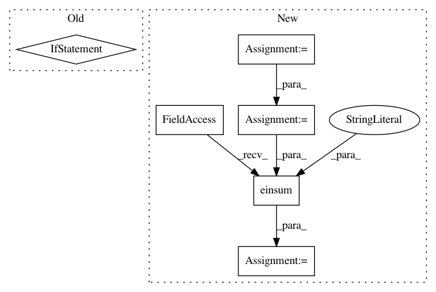

8e0ca26e5571d47425fc73bb3bb118082b742d00,geomstats/geometry/spd_matrices.py,SPDMatrices,random_uniform,#SPDMatrices#Any#,54
Before Change
Points sampled in SPD(n).
n = self.n
size = (n_samples, n, n) if n_samples != 1 else (n, n)
mat = 2 * gs.random.rand(*size) - 1
spd_mat = GeneralLinear.exp(Matrices.to_symmetric(mat))
After Change
Parameters
----------
tangent_vec : array_like, shape=[..., n, n]
Tangent vector at base point.
base_point : array_like, shape=[..., n, n]
Base point.
Returns
-------
inverse_differential_log : array-like, shape=[..., n, n]
Inverse of the differential of the matrix logarithm.
eigvectors, transp_eigvectors, numerator, denominator, temp_result =\
In pattern: SUPERPATTERN
Frequency: 3
Non-data size: 6
Instances
Project Name: geomstats/geomstats
Commit Name: 8e0ca26e5571d47425fc73bb3bb118082b742d00
Time: 2021-03-17
Author: nicolas.guigui@inria.fr
File Name: geomstats/geometry/spd_matrices.py
Class Name: SPDMatrices
Method Name: random_uniform
Project Name: geomstats/geomstats
Commit Name: cdc013766a961e645e6e0e5284d18f9f2153b933
Time: 2018-05-09
Author: ninamio78@gmail.com
File Name: geomstats/hyperbolic_space.py
Class Name: HyperbolicMetric
Method Name: exp
Project Name: geomstats/geomstats
Commit Name: 79ab2da38070ed0a972e72c16a44bd266ed6e941
Time: 2020-04-16
Author: ninamio78@gmail.com
File Name: geomstats/geometry/special_orthogonal.py
Class Name: SpecialOrthogonal
Method Name: regularize_tangent_vec_at_identity